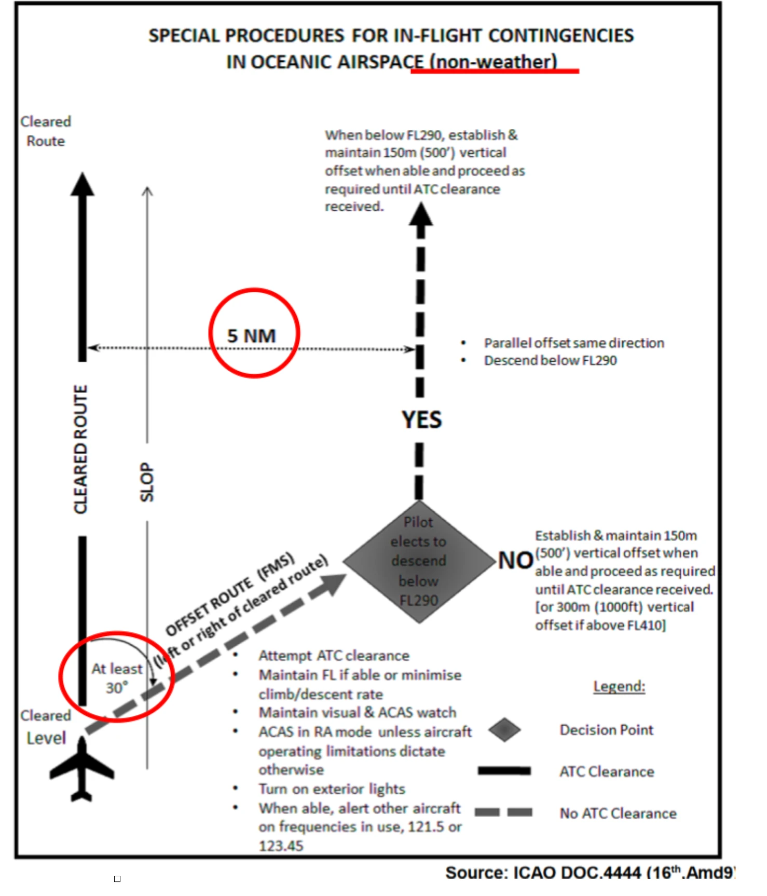
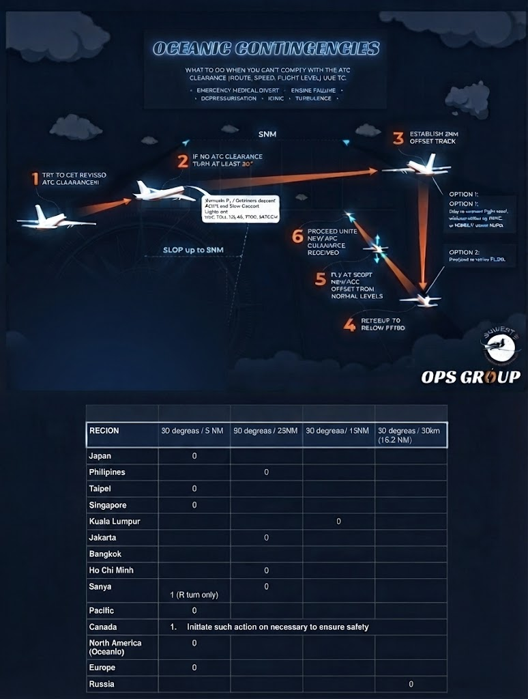
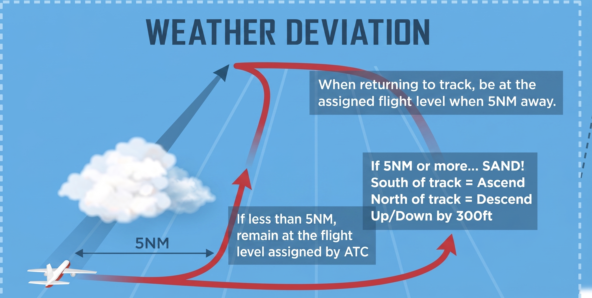
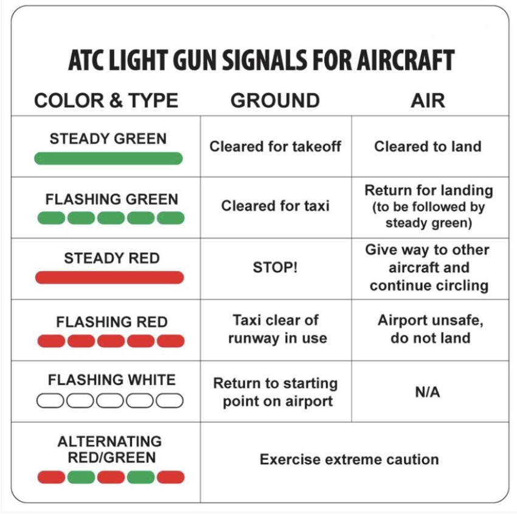

Oceanic / Remote Area Contingency Procedures
| REGION | 旋回／オフセット | 垂直オフセット・備考 |
|---|---|---|
| Japan | 30° / 5NM | 上記の手順どおり |
| Hong Kong | 30° / 5NM | 上記の手順どおり |
| Taipei | 30° / 5NM | Area Guide：記載なし（標準手順）。Vientianeも記載なし |
| Singapore | 30° / 5NM | 上記の手順どおり |
| Bangkok | 30° / 5NM | 上記の手順どおり |
| Sanya | 30° / 5NM | 島嶼管制空域は逸脱前にATCクリアランスを取得。ATCクリアランスに従えない場合は、可能な限り遭難／緊急通報で改訂クリアランスを得てから行動。洋上でATCと通信できない場合はICAO Regional Supplementary Procedures |
| Philippines（Manila） | 90° / 25NM （46km） | 高度維持可：FL410超＝±300m（1000ft）／FL410未満＝±150m（500ft）／FL410＝上昇300mまたは降下150m。93km（50NM）間隔のマルチトラック等では隣接平行ルートとの中間点 |
| Ho Chi Minh / Hanoi | 90° / 25NM | オフセット確立後に±500ft（150m） |
| Jakarta | 90° / 25NM | オフセット確立後に±500ft（150m） |
| Kuala Lumpur | 90° / 25NM | オフセット確立後に±500ft（150m） |
| China | 30° / 5NM （Right turn only） | 上記の手順どおり |
| Pacific | 30° / 5NM | 上記の手順どおり |
| Canada | 安全確保に必要な措置を実施 （数値規定なし） | — |
| North America（Oceanic） | 30° / 5NM | 上記の手順どおり |
| Europe | 30° / 5NM | 上記の手順どおり |
| Russia | 30° / 30km（16.2NM） | — |
| FIR／地域 | 基準距離 | 備考 |
|---|---|---|
| Japan | 5NM | AIP Japan ENR 3.4.3.4.2 |
| Hong Kong Sanya | 5.0NM（9.3km） | — |
| Singapore | 5NM | — |
| Manila | 10NM（19km） | — |
| Ho Chi Minh / Hanoi Jakarta Kuala Lumpur | 10NM | — |
| Bangkok | 10NM | 表なし：トラックから約10NMで降下を開始・維持。逸脱中に対向トラフィックを認識したら、上昇／降下で垂直間隔を確保 |
| Taipei Vientiane | Area Guide：記載なし（Nothing in particular） | |
| 交通の向き | 経路の左側へ逸脱 | 経路の右側へ逸脱 |
|---|---|---|
| 東行（磁方位 000°–179°） | 300ft（90m）降下 | 300ft（90m）上昇 |
| 西行（磁方位 180°–359°） | 300ft（90m）上昇 | 300ft（90m）降下 |
| FIR | 内容 |
|---|---|
| Taipei | 空襲時の手順：空襲情報を受けると Taipei ACC が A/G周波数で放送し、FIRへの進入を禁止。FIR内の機はACCから反転・FIR外への退避、またはROCAF Air Control Centerが指定する空港への即時着陸を指示される。ROCAFの許可なく管制は出発・到着クリアランスを発出しない。目的地以外に着陸した場合は、空襲解除後に新たなフライトプランを提出。（Jepp Taiwan – ICAO Differences or State special procedures） |
| Sanya（RVSM） | 高度逸脱報告：割当FLから90m（300ft）以上逸脱した場合、可及的速やかにATCへ報告。飛行後はFlight Dispatchにも報告（AM NCA issue: China）。なお中国CAACの規定では60m（200ft）以上の逸脱が報告対象 |
| Hong Kong （Crew情報） | 台風回避の迂回ルート（RJAA–VHHH）：例 Y60-FU-A593-PUD-A599-PLT-W19-NOMAR-W18-NLG-W23-ZUH-R473。AKARAコリドー・Shanghai FIR・Guangzhou FIRを通過。このルートでは「China」Group Requirementは不要 |



| 信号 | 地上の航空機へ | 飛行中の航空機へ |
|---|---|---|
| Steady Green（連続緑） | 離陸許可 | 着陸許可 |
| Flashing Green（点滅緑） | 地上走行許可 | 場周経路へ戻れ（後にSteady Greenで着陸許可） |
| Steady Red（連続赤） | 停止 | 他機に進路を譲り場周経路を継続せよ |
| Flashing Red（点滅赤） | 使用中の滑走路/着陸帯から離れよ | 空港は危険、着陸するな |
| Flashing White（点滅白） | 出発地点へ戻れ | 該当なし |
| Alternating Red/Green（赤緑交互） | 厳重注意せよ（危険な状況） | 厳重注意せよ（危険な状況） |
| Red Pyrotechnic（赤色発光信号弾） | 該当なし | 直前の指示にかかわらず、当面着陸するな |
